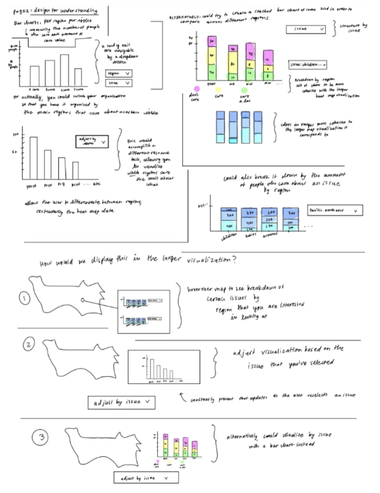
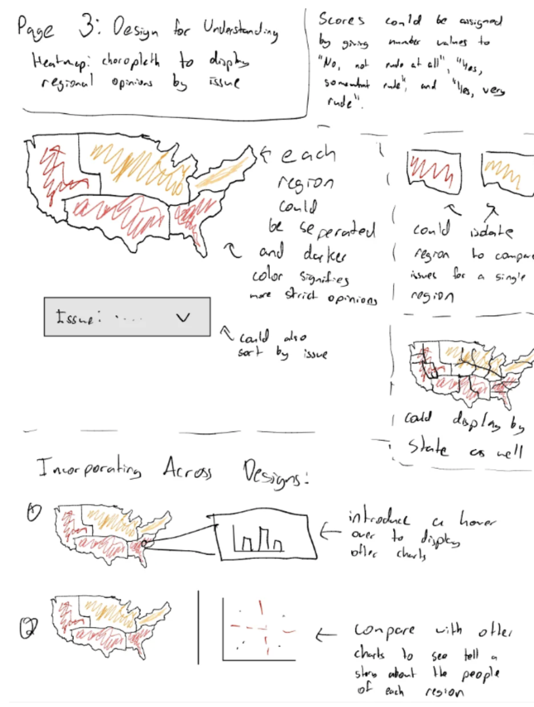
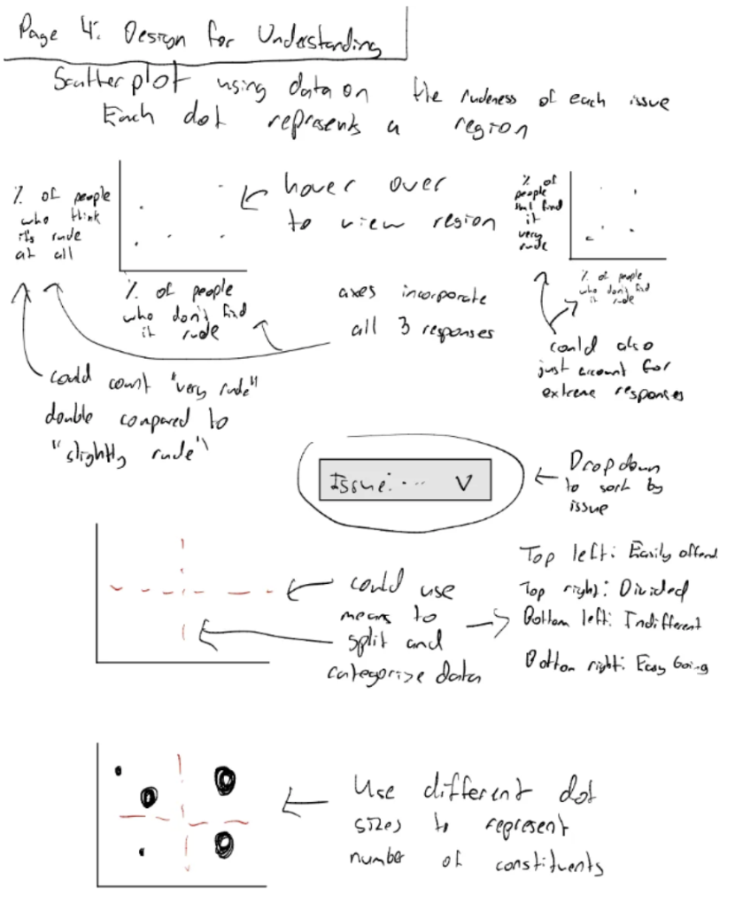
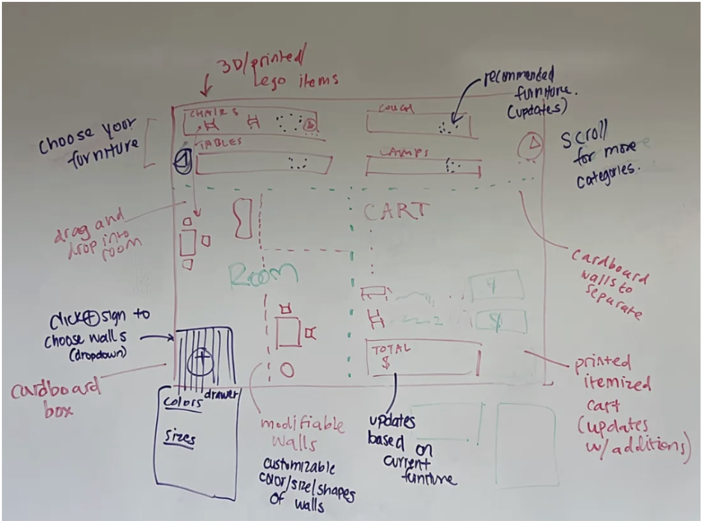

When I first enrolled in Human-Computer Interaction, I expected to learn about the practices that web and technology designers use to cater to consumers. I thought that our class might analyze the development of addictive algorithms, or develop new perspectives on AI’s growing influence, or that we would consider our rapidly increasing reliance on small hits of dopamine from our phones to get through the day. In essence, I went into this semester with a decidedly negative attitude about the interaction of humans and computers.
Now, I exit the semester with a sense of agency and confidence in my ability to create practical, useful and innovative solutions to modern-day problems through the breadth of faculties that computers and the internet provide me. I have built confidence in not only the final output of my work but in the end-to-end process of designing a product.
Over the course of the semester, I developed “hard” skills such as sketching, prototyping, and evaluating interfaces, as well as “soft” skills, such as communication, creativity and reflection. I learned how honing a strong skill set can assist in a wide range of projects, from designing interfaces for caregivers to developing a VR experience for my classmates.
In the end, I’ve learned that strong technical decisions are bolstered by emotional awareness and a rigorous iterative process. Below, I’ve noted the key takeaways from this semester that are integral to any human-centered design process. From here, I will to refer to any design sprints as “DS”.
What Defines My Design Process
1) Iteration
One of the most intensive sketching processes we completed was for DS 1. Each team member was tasked with sketching at least 12 different designs across a wide range of display sizes. Although this was our entry point into the design process, I immediately noticed how strongly my work was influenced by the idea of iteration. I found myself making stronger arguments for why each component was either important or ineffective, and by the end of the process, I felt that my final sketch was the best expression of my vision.
One of the most impactful readings we encountered on iteration was the Five Design Sheet Methodology. It was especially helpful in freeing myself from the pressure of achieving perfection on the first try.
In their paper, Roberts et al. encourage divergent thinking and the exploration of half-baked ideas. The first sheet of the five-sheet process is specifically designed as a space for mini ideas to take shape. As the process continues, designers can look back on these initial ideas and build upon them, moving toward a more convergent and fully realized design. While the early sketches are quick and messy, the final product is informed by the sheer quantity of ideas generated in earlier stages, resulting in a refined and intentional outcome. We practiced this methodology in DS 2. Below, you can observe how the sketching process took shape. Click through to see each sheet from the 5DS process with a brief blurb attached.
Sheet 1 Quick sketches which we used to generate as many possible visualization directions as possible.Sheet 2

We refined one promising idea into a clearer sketch.Sheet 3

Here, iterated through different data visualization tactics to best explore regional polarization.Sheet 4

We synthesized earlier ideas into a final, developed scatterplot.Sheet 5 The final sheet integrated the strongest elements from all previous sketches into a cohesive plan for further design.
2) Communication
In DS 1, we created individual sketches and then communicated our ideas to our group members after thinking through them independently. In DS 2 and DS 4, we instead sketched collaboratively as a team, fusing our ideas together in real time. It was important to maintain one’s own vision in order to meaningfully contribute, but it was equally important to listen to others and keep an open mind so that the final design reflected a range of perspectives and fully addressed the prompt.
In DS 4, my team members and I each sketched individual ideas for what we envisioned as our final concept. After presenting our ideas to one another, we discussed them and then collaborated on a whiteboard to create a unified sketch. Each of us had a marker, and we all contributed different elements. In the end, our final product combined many components, which not only made the design more engaging for users, but also allowed us to address a wider range of user needs.
My individual sketch for DS 4.

Our collaborative sketch for DS 4.
In the images above, you can see that several of my components were incorporated into the final design, alongside many additions I hadn’t initially considered.
Ultimately, one of the most important aspects of the group design process was learning how to clearly express my own vision while also finding ways to understand and integrate the visions of others in order to better appreciate different perspectives.
3) Evaluation
During the design process, we were encouraged to collect feedback on our work. This process helped me understand that evaluation does not take a fixed form.
For example, in DS 3, we aimed to create an emotional journey within a VR experience, where the user’s interaction was physical. In contrast, DS 4 involved a physical prototype that our peers could touch and react to in real time. We also worked with less tangible designs. We worked with Figma prototypes in DS 1, where users were given imagined scenarios and tasks to guide their engagement. These differences pushed me to think more flexibly about what meaningful feedback looks like.
We were also introduced to different evaluation methods, such as heuristic evaluation, interviewing, and written and verbal critiques. We learned to interface with users and create a set of usability testing practices that were distinct for each project.
4) Publication
Publication is an essential part of the design process, not just as a way to share work, but as a way to reflect on it. Publication is a beneficial process for both sharing work with others but also allowing yourself to reflect on your work. DS 4 highlighted the importance of reflection when we were encouraged to look back at feedback from our past design sprints.
We also learned key skills about presenting and communicating our vision to others. For each sprint, we had demo days during which we presented to our peers. In DS 1 and 2, we had to give a presentation to the class, emphasizing the importance of storytelling and public speaking.
Publication of our work also challenged us to consider who the product was for. Not only did we have to consider our presentation audience, but the users of our work themselves. Who are we presenting to? Who is this for? We were challenged to create a sense of public accessibility throughout the design process, especially in DS 1 where we made a list of personas that would need to access our product.
5) Emotional Awareness and Imagination
Throughout every stage of our design process, we were encouraged to construct an empathetic lens. We frequently discussed “human-centered design,” and while this is a wide-spanning field with countless components, I think that honing the emotional and human elements of design is the key to creating truly human centered design. In our virtual reality DS 3, we aimed to create an emotional experience for the user - for them to experience a level of joy and whimsy. To do so, we had to think outside the box, communicate with one another, and tap into our own emotions to create something that we received overwhelmingly positive feedback on, even being voted in class as the best VR design.
Conclusion
This semester reshaped how I understand both technology and my role within it. Rather than viewing computers as forces that act upon us, I now see them as tools that can be intentionally shaped through empathy, iteration, and collaboration.
Related Coursework
These are the design sprints that shaped the ideas in this manifesto: